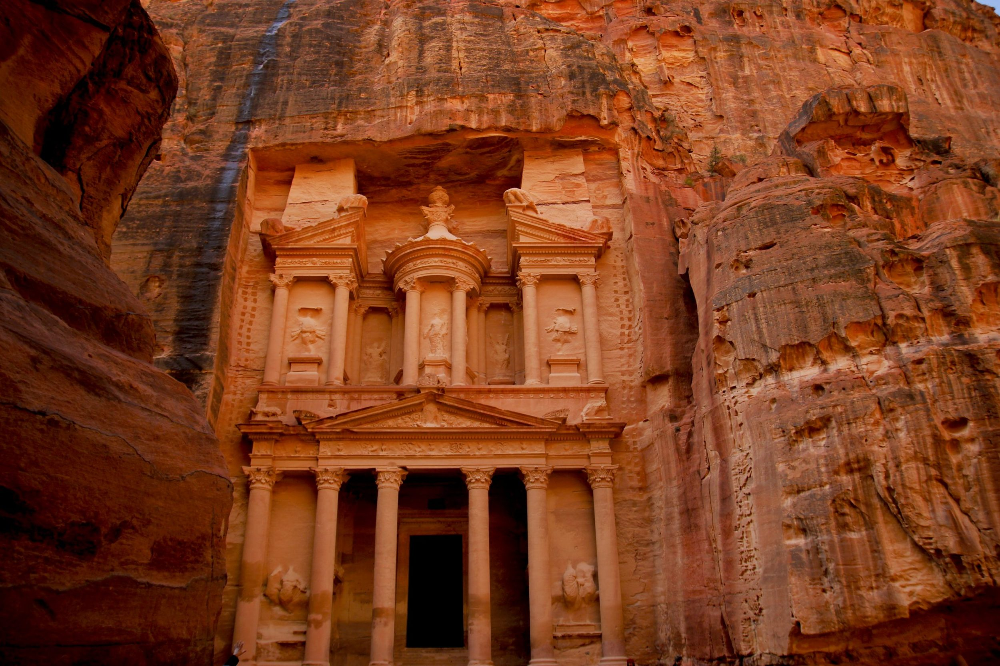

Petra – ruiny miasta Nabatejczyków, którego rozkwit miał miejsce w czasach antycznych, III w. p.n.e. do I w. n.e. Petra była wtedy stolicą królestwa Nabatejczyków. Znajduje się w południowo-zachodniej Jordanii. Położona jest w skalnej dolinie, do której prowadzi jedna wąska droga wśród skał – wąwóz As-Sik. Petra słynie z licznych budowli wykutych w skałach. Sami Nabatejczycy zwali Petrę Rqm (Rakmu), co oznacza „wielobarwna”.Petra leży w południowo-zachodniej części obecnej Jordanii. Położona jest na terenie wyżynnym, półpustynnym, wśród skał ciągnących się na odległość ok. 1,6 km ze wschodu na zachód i z północy na południe, będących zachodnią częścią masywu Dżabal asz-Szara.
